Wildpflanzen
Bestimmung
Register
Systematik
Besucher
<
Rote, Blütenstände
>
Rote, Blütenstände
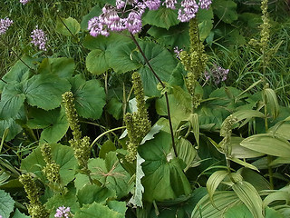
Graue Alpendost / Adenostyles Alliariae
Schlangen Knöterich / Bistorta Officinalis
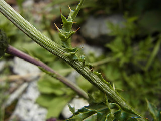
Rhätische Bergdistel / Carduus Defloratus ssp. rhaeticus
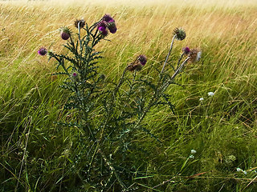
Nickende Distel / Carduus Nutans
Wiesen Flockenblume / Centaurea Jacea ssp. jacea
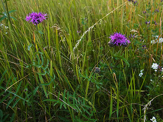
Skabiosen Flockenblume / Centaurea Scabiosa
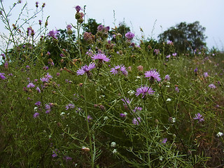
Gewöhnliche Rispen- flockenblume / Centaurea Stoebe ssp. stoebe
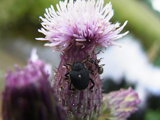
Acker Kratzdistel / Cirsium Arvense
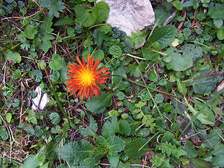
Gold Pippau / Crepis Aurea
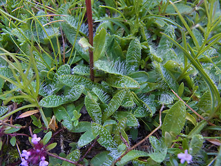
Einköpfiges Berufkraut / Erigeron Uniflorus
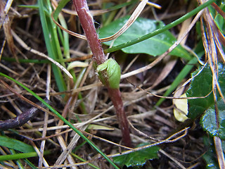
Gemeiner Alpenlattich / Homogyne Alpina
Monte-baldo Witwenblume / Knautia Baldensis
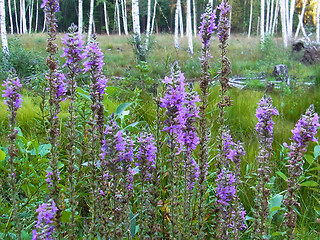
Blut Weiderich / Lythrum Salicaria
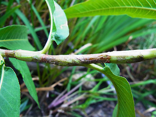
Wasser Knöterich / Persicaria Amphibia
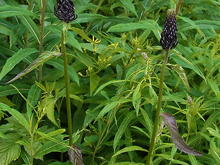
Schwarze Teufelskralle / Phyteuma Nigrum
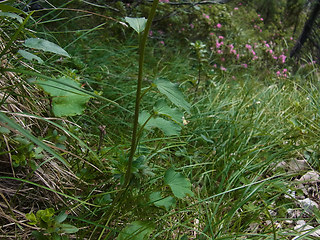
Haller Teufelskralle / Phyteuma Ovatum
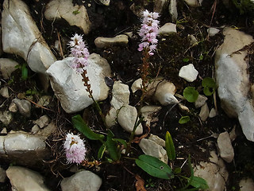
Knöllchen Wiesenknöterich / Polygonum Viviparum
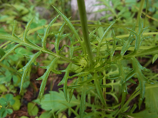
Glänzende Skabiose / Scabiosa Lucida
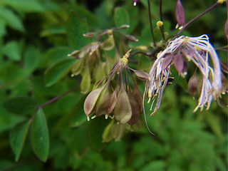
Akeleiblättrige Wiesenraute / Thalictrum Aquilegifolia
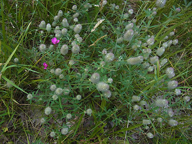
Hasen Klee / Trifolium Arvense
nach oben